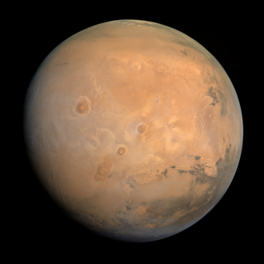

Mars

Opis
- 4. po oddaljenosti od Sonca
- Tehta 6.5 x 10^23 kg
- Površina je 144,4 million km²
- Oddaljenost od Sonca je 228 milionov km
Zanimivosti
- Pravijo mu tudi Rdeči planet
- 7. po velikosti planetov
- skotaj najugodnejši pogoji za življenje poleg zemlje
- leta 2003 se nam je najbolj približal